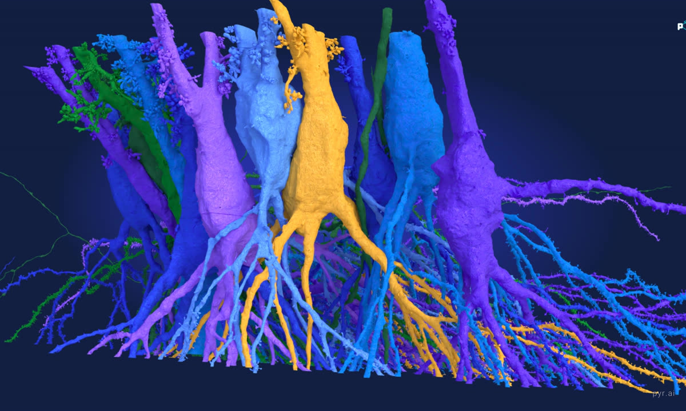
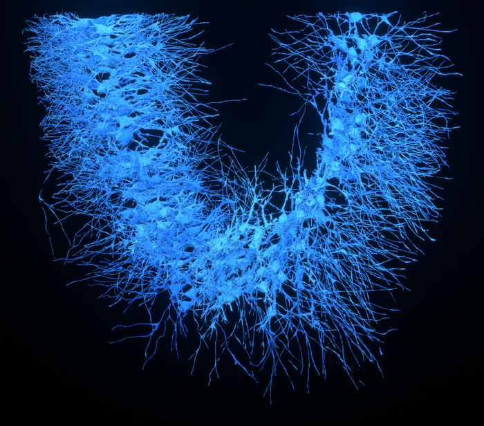
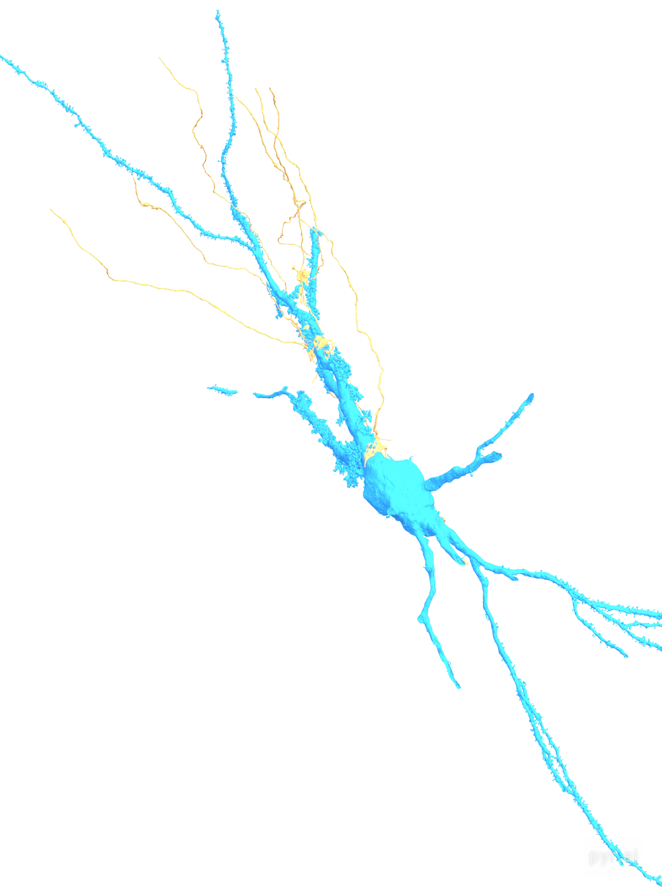
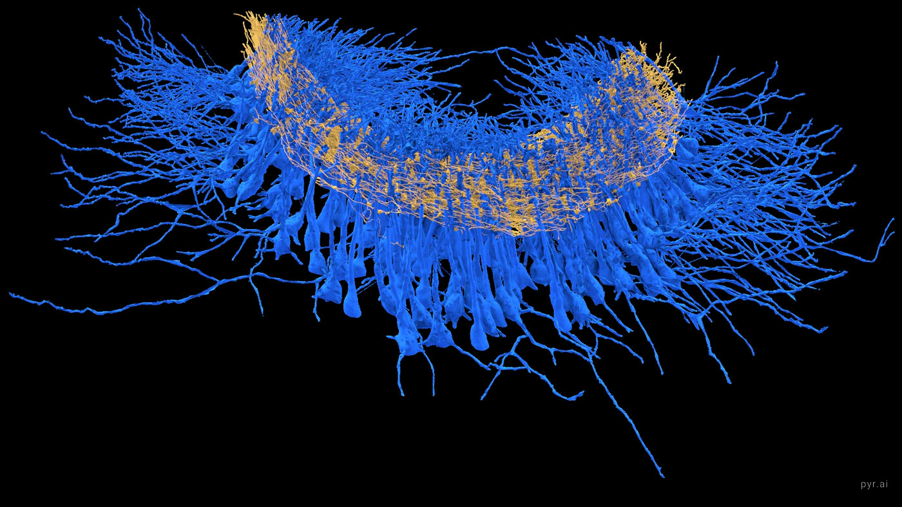

The block that was cut, imaged and reconstructed: 1 x 1 x 0.1 mm
of mouse CA3. One pyramidal cell is drawn inside it at true relative scale. Nearly
two thousand of them are in there, threaded through by more than fifty five
thousand mossy fibers.
Watch it assemble
Populations arrive in circuit order: mossy fibers first as the incoming
signal, then the CA3 cells they drive, then the wider pyramidal population, and
inhibitory interneurons last.
What the study found
The hippocampus is where experience becomes memory, and CA3 is the part that binds
the pieces of an event together. To understand how, you need to know not just which
cells are present but exactly which ones talk to each other.
This study took a block of mouse CA3, imaged it with an electron microscope, and
traced every neuron and every connection inside it. The result is a complete wiring
diagram of a small piece of real brain: 1,815 pyramidal cells, the main
excitatory neurons, 229 inhibitory cells, and more than 55,000 mossy
fibers, the axons carrying signals in from the neighbouring dentate gyrus.
Not all pyramidal cells are alike
Some are covered in elaborate spiny structures called thorny excrescences, and these
cells receive many mossy fiber inputs. Others, the sparsely thorny cells, receive almost
none. The split is sharp rather than gradual, so these are genuinely two kinds of cell
rather than two ends of one continuum.

Thorny excrescences on pyramidal cell bodies. Each balloon like
cluster is a single elaborate spine, and a mossy fiber terminal wraps around it.
Input is unevenly spread across space
Cells further along the region receive substantially more mossy fiber contacts than
cells nearer the beginning. Cells sharing the same incoming fibers also sit closer
together than chance would predict, suggesting the wiring is organised rather than
arbitrary. Curiously, the cells receiving the most inputs get them through
smaller terminals holding fewer vesicles, so more connections does not simply
mean more of everything.
Inhibition is targeted, not general
Mossy fibers also drive inhibitory neurons, which act as brakes on the circuit. But
they drive only the inhibitory neurons that go on to target thorny cells. Those serving
sparsely thorny cells receive no mossy fiber input at all. So the same signal that
excites one type of cell also recruits the brake belonging specifically to that type,
leaving the other type untouched.
182 thorny pyramidal cells

Inside a single cell
Thorny excrescences are the elaborate spines that give thorny pyramidal cells their
name. A mossy fiber ends on one in a single enormous terminal, making dozens of contacts
at one site rather than one contact in many places. This cell receives
165 mossy fiber synapses from just 6 fibers.

this one cell receives
165
mossy fiber synapses, and they arrive from only 6 fibers.
A single terminal makes dozens of contacts on one thorn.
reconstructed at
4.5M
triangles, with no simplification applied, which is why the
thorny excrescences hold their shape this close up.
in the full volume
1,815
pyramidal cells, 229 inhibitory cells and more than
55,000 mossy fibers were reconstructed.
the dividing line
10
mossy fiber inputs separates thorny cells from sparsely thorny
ones. Thorny cells reach 165. Sparsely thorny cells stop at 3.
Eight seconds, thorns to whole cell. The mossy fibers arrive
nearest first, so the one already in frame is the one that appears.
Watch it fire
Six mossy fibers reach this cell, and this is the honest version of what they do.
One fires, lands hard on the thorn, and the cell does not answer. The other five
arrive. All six fire together, and only then does the cell send a signal of its own.
The pulse is not a sweep across the screen: every point on these meshes carries its
own distance measured along the cell's own skeleton, so the wavefront follows the
real branching and splits wherever the cable splits.
Eighteen seconds. All 165 mossy fiber synapses onto this one
cell, from all six fibers that reach it.
A single mossy fiber makes one of the strongest connections in the
brain, touching a CA3 pyramidal cell at dozens of release sites at once. Even so, one
incoming spike is usually not enough to make the cell fire. When the granule cell
fires a rapid burst of a few spikes, the connection strengthens within milliseconds
and then reliably triggers a spike. That is why these are called
conditional detonator synapses.
Two limits worth stating. The reconstruction is cut off at the edge of the
tissue block, so this arbor is incomplete. And the descending branches carrying the
signal are mostly basal dendrite with the axon embedded in them; at this resolution
the two could not be cleanly separated.
Three other cuts of the same event are here.
Every synapse these cells make
Sixteen CA3 pyramidal cells were traced. Fifteen of them have their axon followed
through the volume, and those axons make 25,723 synapses onto 6,348 other
cells in the same block of tissue. Every one sits at its real measured coordinate, not
an estimated position.
That works out to a median of 1,949 outgoing synapses per cell,
which sounds impossibly high until you remember what CA3 is for. Its pyramidal cells are
the most heavily interconnected population in the hippocampus, wiring back onto each
other through vast recurrent axon collaterals, and this is the network that theory says
lets the hippocampus complete a whole memory from a fragment of one. The gold beads
string along each axon because that is physically where the contacts are made, one
after another as the axon passes its targets. Most partners are touched just once:
58% receive a single synapse.
The presynaptic cells fade up, their synapses bloom across the volume, and then the postsynaptic partners arrive around them.
A sea of mossy fibers
Seen edge on, the pyramidal cell bodies hang in a single layer while the mossy
fibers thread horizontally through them. Every gold strand is an axon arriving from
the dentate gyrus.

The classification, reproduced
The study separates thorny from sparsely thorny cells by mossy fiber convergence,
drawing the line at more than 10 inputs. That split reproduces cleanly in this subset.
population
with MF input
median inputs
above 10
Thorny pyramidal
94 / 182
22
71%
Sparsely thorny
8 / 68
1
0%
Inhibitory
9 / 28
2
22%
Thorny cells reach 165 mossy fiber inputs at the top end.
Sparsely thorny cells max out at 3, and not one crosses the threshold. Only
9 of 28 interneurons receive mossy fiber input at all, which is the selectivity
the feedforward inhibition result describes.
Gallery
Stills from the same reconstruction, at full size. Tap any of them to open the
large version.
The reconstructed population seen face on, gold mossy fibers threading
through crowds of cells. The inset follows one mossy fiber axon down to its boutons,
with a partner cell process pressed against it.
Pyramidal cell bodies lined up as they sit in the layer, one colour each.
The apical dendrites climb out of the top carrying their thorny excrescences, and the
basal dendrites fan out below.
These six mossy fibers are not private to this cell. Each carries on
through the tissue, so 56 further cells receive the very same six inputs
through another 126 synapses. The purple cells are not senders, they are fellow
listeners hearing the same signal at the same moment.
Sixteen presynaptic cells in pink, with all 25,723 of their synapses
in gold. The beads string along each axon because that is physically where the
contacts are made, one after another as it passes its targets.
{kind=link}
{kind=link}
{kind=link}
{kind=link}
{kind=link}
{kind=link}